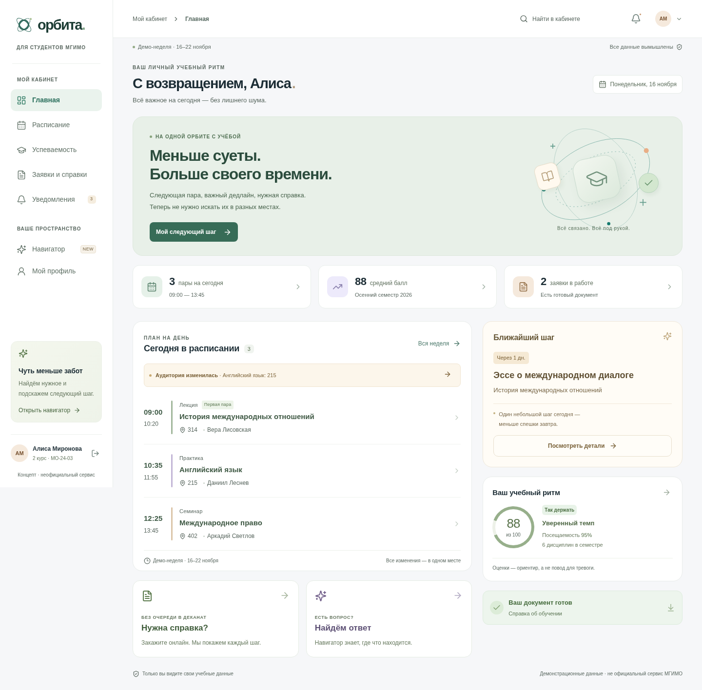
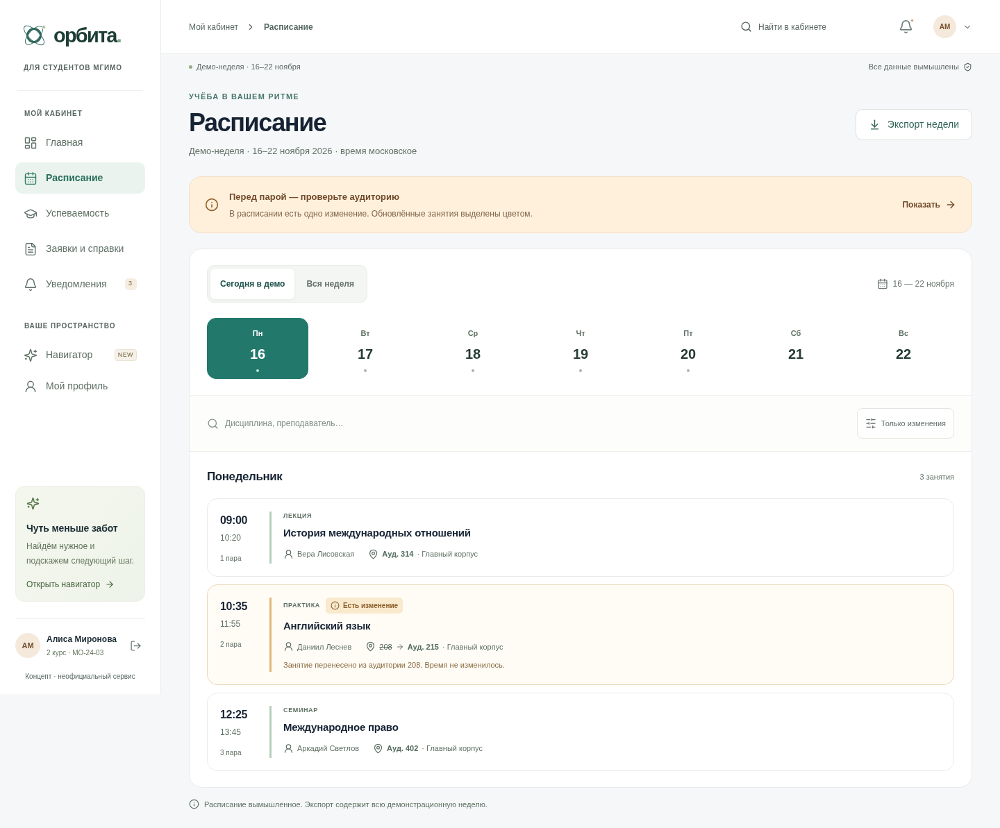
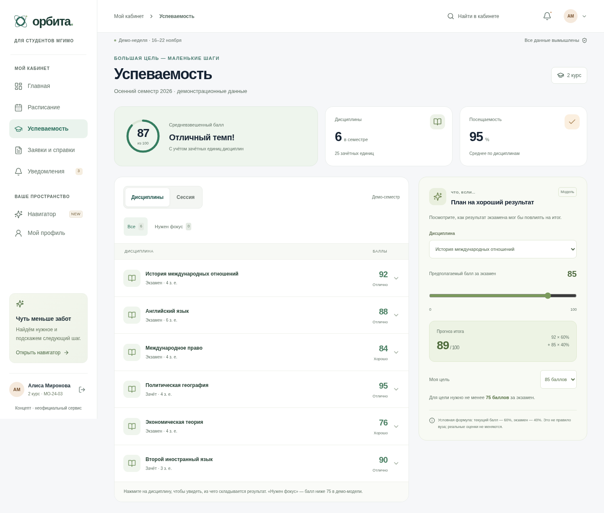
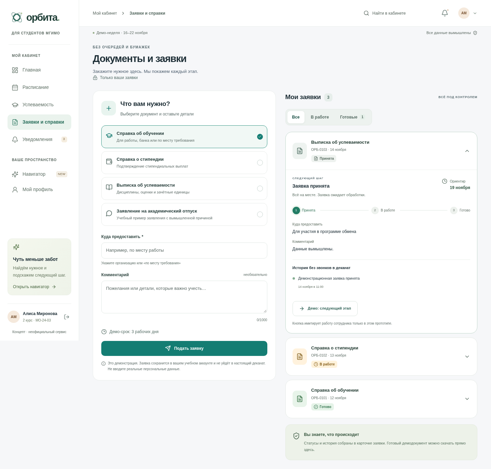
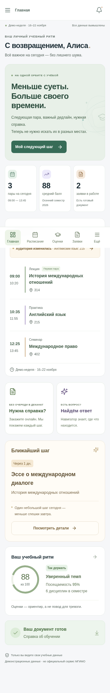
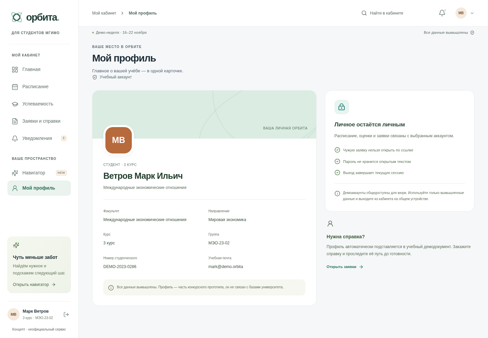

Первая интегрированная версия главной до финального прохода проверки
01-first-dashboard.png · реальный браузер Chromium · вымышленные данные

ЦИФРОВОЙ ДЕКАНАТ БУДУЩЕГО · КОНКУРСНЫЙ КОНЦЕПТ
Документ описывает фактический процесс, исходники, проверки и реальные браузерные снимки проекта. Локальная проверка и подготовка развёртывания отделены от ещё не выполненной публичной публикации. Неудачные промежуточные варианты сохранены в истории ниже.
14 ноября 2026 года пользователь передал конкурсное задание «Цифровой деканат будущего» и попросил привлечь агентов для координации, бизнес-анализа, дизайна, креативных решений, разработки, технического руководства, исследования существующих решений, тестирования и ревью. Полный текст задания сохранён в assignment.txt.
До разработки проверено: репозиторий alexchist/mgimo-vibe-coding пуст, исходного приложения и тестов нет. В среде доступны Git, Node.js/npm и Python. Пользователь отдельно указал: «Коммить все в репозиторий, но не в main ветку». Создана ветка feat/orbita-student-portal.
Пользователь сообщил, что хостинга пока нет, и выбрал подготовку развёртывания. Поэтому публичная доступность и срок работы до 28 ноября остаются задачами публикации, а не следствием успешной локальной сборки.
Разрозненность учебной информации взята из конкурсного задания. Дополнительные интервью или опросы не проводились и не заявляются. ИИ предложил структуру вокруг ближайшего действия студента: расписание и переносы, учебная ситуация, заявки с историей, уведомления и локальный навигатор.
Пять обязательных разделов реализованы в прототипе. Дополнительные функции выбраны потому, что связывают эти разделы. Например, готовая справка становится действием на главной, а уведомление о переносе ведёт к расписанию. Подробные сценарии и критерии приёмки — в PRODUCT.md.
| Роль | Ответственность | Проверяемый артефакт |
|---|---|---|
| Тимлид, основной агент | Выбор стека, общий контракт, интеграция, запуск, проверка, Git | AGENTS.md, CONTRACT.md, исходники и история изменений |
| Координатор / бизнес-аналитик / креативный редактор | Карта задания, сценарии, приоритеты, ограничения и комплект сдачи | PRODUCT.md, этот документ, сообщения о рисках |
| Дизайнер / разработчик интерфейса | Оболочка, вход, главная, адаптивность и визуальная система | Компоненты приложения и стили |
| Разработчик учебных разделов | Расписание и успеваемость | Компоненты учебного раздела |
| Разработчик сервисов | Заявки, уведомления, профиль, навигатор | Компоненты сервисов |
| Разработчик сервера | Вход, сессии, SQLite, авторизация объектов и API | Серверные модули |
| Исследователь / ревьюер | Изучение решений, проверка рисков и соответствия | RESEARCH.md, REVIEW.md, независимые тесты безопасности |
| Тестировщик | API и браузерные сценарии, мобильный экран, регрессия | tests/, результаты ниже, реальные снимки в screenshots/ |
Один агент может совмещать роли, а проверка выполняется отдельным проходом. Число ролей не выдаётся за число одновременно запущенных моделей. Общий контракт фиксирует имена компонентов, структуру данных, маршруты API, дизайн и области владения файлами, чтобы параллельная разработка не разрушала интеграцию.
| Инструмент | Как используется | Ограничение утверждения |
|---|---|---|
| OpenAI Codex в облачном рабочем окружении | Анализ задания, промпты субагентам, генерация кода, интерфейса, текстов и документации; интеграция | Не приписываем работу другим неиспользованным ИИ-сервисам |
| Механизм субагентов Codex | Параллельные роли и обмен замечаниями | Фактические роли и материалы видны в этой сессии; будущие проверки нельзя считать завершёнными заранее |
| Облачный терминал и файловые инструменты | Чтение задания, создание и редактирование файлов, команды сборки и тестов | Результат каждой команды нужно проверять по коду возврата и выводу |
| Git | Отдельная ветка, проверка изменений, коммиты | Наличие локального коммита не равно отправке на GitHub |
| Node.js/npm, React, Vite, Express, SQLite | Средства реализации и запуска | Это обычные технологии приложения, а не дополнительные ИИ-модели |
| Lucide | Иконки интерфейса | Лицензия библиотеки должна быть учтена в перечне сторонних материалов |
| Официальные GitHub-репозитории Moodle, Canvas LMS и W3C | Исследование навигации, событий, ошибок загрузки и доступности | Исходники изучались для анализа принципов; код, стили и логотипы не копировались |
| Playwright и Chromium | Проверка сценариев в настоящем браузере, снимки экранов, экспорт отчёта в PDF | Проверяются реальные DOM, запросы и скачиваемые файлы, не макеты |
| axe-core через Playwright | Автоматическая проверка доступности ключевых экранов | Автоматические проверки не заменяют полную ручную оценку WCAG |
| marked | Преобразование документа о процессе из Markdown в HTML перед PDF | Конвертер документов, не ИИ-редактор |
| FFmpeg | Сборка записи реальных браузерных взаимодействий в видео DEMO.mp4 |
Запись экрана, не сгенерированная анимация интерфейса |
| Prettier | Единое форматирование исходников перед итоговыми проверками | Форматирование не заменяет запуск тестов |
| Docker и Caddy | Подготовка воспроизводимого развёртывания и HTTPS на выбранном VPS | Подготовленные файлы не означают, что публичный сервер уже запущен |
Встроенные инструкции cloud-environment-onboarding:setup и cloud-environment:cloud-environment-runtime |
Первая — проверка исходной облачной среды; вторая — диагностика доверенных сертификатов контейнерной сборки | Это инструкции для агента, не внешние ИИ-модели и не университетские сервисы |
Внешний генеративный ИИ внутрь кабинета не подключается. Локальный навигатор отвечает на ограниченный набор задач по данным аккаунта. Это осознанное решение: не зависеть от ключей, стоимости и доступности внешнего API и не выдавать эвристики за языковую модель. Отдельные графические редакторы, генераторы изображений и опросные сервисы в исходной работе не использовались.
Ниже приведены реальные запросы пользователя и выдержки из управляющего контракта. Это не выдуманная стенограмма. Более подробные постановки задач разработчикам и обратная связь собраны в PROMPTS.md.
Пользователь: «Запусти множество подагентов» для управления, бизнес-анализа, дизайна, креатива, разработки, технического руководства, исследования решений, тестирования и ревью. «Набери максимальный балл».
Ответственное решение: перевести критерии в проверяемые сценарии и карту доказательств. Максимальный балл остаётся целью; гарантировать оценку экспертов нельзя.
В AGENTS.md сформулировано: «authorize every private API on the server; scope each query to session user; hash passwords with scrypt; use HttpOnly sessions and CSRF checks on writes; never store authentication tokens in browser storage».
Следствие для реализации: пользователь определяется серверной сессией, а не переданным из браузера userId; чужая заявка не должна открываться при подстановке ID. Обязателен отдельный негативный тест, а не только успешный вход.
Фрагмент задачи агенту: «Build thorough but concise competition rubric mapping, user scenarios, meaningful creative differentiators and evidence collection plan. Document real multi-agent process/prompts honestly; no invented interviews or claims of tests».
Результат: PRODUCT.md и PROCESS.md, карта рисков публикации, сценарий видео и точный комплект сдачи. Аналитик отдельно отметил, что 28 ноября — срок доступности до итогов, а не доказанный дедлайн приёма работ.
В контракте: «Russian UI, mobile from 360px, keyboard access, visible focus, form labels, helpful loading/error/empty states. No inert buttons or fictitious AI integrations».
Также задана фиксированная демо-неделя 16–22 ноября и прямое пояснение «Навигатор по вашим данным · без внешнего ИИ». Эти ограничения помогают избежать ошибок ИИ: случайно текущих дат, кнопок без поведения, ложной отправки в университет и недоказанного «умного» помощника.
Пользователь: «Коммить все в репозиторий, но не в main ветку». Ответ: работа ведётся в feat/orbita-student-portal.
На вопрос о хостинге пользователь выбрал «Хостинга пока нет — подготовить развёртывание». Следовательно, подготовка файлов публикации входит в работу; доступность готового сайта нельзя объявлять до реального размещения и внешней проверки.
Исследователь проверил доступ к официальным материалам Moodle, Canvas и W3C. Прямые запросы к их сайтам вернули CONNECT 403 в текущем окружении. Вместо неподтверждённого пересказа были прочитаны официальные исходники с GitHub, полученные с HTTP 200: панель и Timeline Moodle, варианты Dashboard Canvas, пояснения WCAG о размере целей, видимом фокусе и перестроении страницы.
В продукт перенесены принципы: ближайшие события на главной, разные представления для разных задач, явные ошибки, названия кнопок-иконок, заметный фокус, мобильные цели около 44 px. Подробные наблюдения и ссылки — в RESEARCH.md. Это пример уточнения метода после ограничения среды, а не утверждение, что исходные сайты недоступны российскому пользователю.
Архитектурное решение: браузер отправляет логин и пароль серверу. Сервер сравнивает пароль с защищённым производным значением, полученным через scrypt; открытый пароль в базе не нужен. После входа браузер получает HttpOnly-cookie с идентификатором сессии, который JavaScript страницы не читает. При изменениях проверяется CSRF-токен.
Каждую заявку сервер ищет одновременно по её идентификатору и владельцу из сессии. Поэтому знание чужого номера не даёт доступ. SQLite хранит данные между перезагрузками и перезапусками приложения; при развёртывании файл базы должен находиться в постоянном томе. В продуктивной конфигурации нужны HTTPS и защищённые cookie.
Эта схема реализована и проверяется интеграционными тестами сервера. Пароли демонстрационных аккаунтов открыты для жюри, но в таблице пользователей хранятся только хеши. Настоящих студенческих данных и ключей внешних сервисов нет.
Сохранились следующие реальные снимки Chromium. Первая версия снята до исправления читаемости; остальные — после основного прохода улучшений. Отдельный макет Figma или вручную нарисованный дизайн не создавался: визуальная гипотеза сразу проверялась в работающем браузере.
| Материал | Что показывает |
|---|---|
01-first-dashboard.png |
Первая интегрированная главная: аккуратная композиция, но слишком бледные и мелкие подписи — реальный неудачный аспект первой версии |
02-dashboard.png |
Главная после улучшения читаемости: занятия, изменение аудитории, ближайший шаг и готовый документ |
03-schedule.png |
Расписание демонстрационной недели и заметные изменения |
04-grades.png |
Учебные результаты, составляющие оценки и условный калькулятор |
05-requests.png |
Форма документа, список и история заявки |
06-mobile.png |
Настоящий viewport шириной 360 px, адаптивная главная |
07-second-account.png |
Второй вымышленный студент с собственным профилем |
DEMO.mp4 |
Запись 43 секунды: реальные действия входа, учебных разделов, заявки до скачивания, второго аккаунта и телефона |
Видео собрано FFmpeg из кадров реального взаимодействия Playwright с приложением. В него добавлены поясняющие титры; интерфейс не подменялся картинками. Сценарий записи воспроизводится через scripts/capture-demo.mjs. Это краткая демонстрация без голоса; при желании капитан может записать более подробный рассказ по сценарию из PRODUCT.md.
Скриншоты автоматически включаются в PDF скриптом scripts/prepare-report.mjs. Исходное задание, продуктовый контракт и промпты сохранены текстом. Ниже раздельно приведены успешные проверки, промежуточные дефекты и ещё не выполненная публикация.
На промежуточном серверном этапе 14 ноября тимлид запустил npm test: успешно завершились 20 тестовых записей Node test runner — 18 сценарных подпроверок и 2 родительские группы. Затем добавлена проверка ротации сессии; окончательный результат — 21 из 21: 19 сценарных подпроверок и 2 родительские группы. Сценарии находятся в tests/api.test.mjs и tests/security.test.mjs. Они проверяют настоящий сервер и SQLite, включая вход, различие аккаунтов, чужие идентификаторы, запрет скачивания чужого документа, CSRF, повторную отправку, сохранение после перезапуска и дополнительные границы сессий.
npm audit для установленных зависимостей сообщил 0 известных уязвимостей на момент прогона. Это результат проверки базы известных уязвимостей, а не гарантия отсутствия всех дефектов безопасности.
Первый локальный коммит серверного этапа — ca2d049 в ветке feat/orbita-student-portal. После него выполнены браузерные проверки, сохранены финальные скриншоты и проверена контейнерная инфраструктура. Их результаты приведены ниже.
| Наблюдение при чтении исходников | Исправление или следующий шаг | Граница доказательства |
|---|---|---|
Экспорт календаря сначала задавал TZID=Europe/Moscow без собственного описания часового пояса VTIMEZONE |
Разработчик перевёл события в UTC: занятие в 09:00 МСК записывается как 06:00Z |
Финальный браузерный тест скачал файл и проверил 13 событий и точное UTC-время |
| Часть компактных действий могла оказаться неудобной на телефоне | В учебном разделе увеличены мобильные цели до 44 px и сохранены текстовые подписи | Финальный сценарий при 360 px прошёл: основные разделы и заявка доступны, горизонтального скролла страницы нет |
| Подсказка навигатора обещала ближайший экзамен, а ответ давал средний балл; расписание отвечало понедельником независимо от уточнения | Разработчик добавил обработку экзаменационных дат и конкретного дня недели | В изолированном браузерном прогоне проверены ближайший экзамен и запрос о среде |
| Требовалось проверить повторный вход и ротацию сессии, а не только первый логин | Добавлен отдельный тест в независимую проверку безопасности | Suite безопасности прошёл 10 записей runner; окончательный общий серверный результат — 21 из 21 |
| Первый интегрированный браузерный прогон: 17 тестов, 3 прошли, 14 проверок доступности не прошли из-за контраста текста | Дизайнеру переданы реальные нарушения, повышены читаемость и контраст глобальных стилей | Первая версия сохранена в screenshots/01-first-dashboard.png; в окончательной проверке эти нарушения отсутствуют |
| Второй интегрированный прогон: из 20 тестов прошли 4; остались 14 нарушений контраста в мелких подписях и 2 таймаута у кнопки выхода | Найдено обрезание нижней части sidebar из-за overflow:hidden; добавлена вертикальная прокрутка, оставшиеся контрастные цвета исправлены |
Проверки не ослаблялись: окончательный прогон прошёл с теми же действиями входа/выхода и требованиями контраста |
| Третий интегрированный прогон: 18 из 20 прошли, остались две проверки названий кнопок дней расписания | Видимый текст Пн16 не совпадал с озвучиваемым Пн 16; в реальную разметку добавлен пробел |
Все шесть пользовательских сценариев уже прошли; финальный прогон после форматирования успешно повторил весь комплект |
| Ревью нашло гонку: старый ответ с личными данными мог прийти после выхода и вернуть кабинет на экран | Добавлен браузерный регрессионный сценарий с задержкой /api/bootstrap; дизайнер ввёл защиту от устаревших ответов |
Независимый браузерный повтор подтвердил: после выхода и доставки старого ответа остаётся экран входа, личный UI отсутствует, сессия возвращает 401 |
| Закрытая мобильная панель оставляла ссылки доступными через Tab; повторный выбор активного раздела не закрывал меню | Исправлены доступность закрытой панели, фокус при открытии и закрытие при повторном выборе | Ревьюер фактически проверил Chromium 360 px: Tab не уходит в скрытую панель; открытие фокусирует кнопку закрытия; повторный выбор главной закрывает меню |
| Поиск мог скрыть результаты при клавиатурном переходе между ними | Скорректирована обработка фокуса списка поиска | В браузере проверены Tab → ожидание → Tab → Enter: второй результат остаётся виден и открывает расписание |
Контейнер запускался от непривилегированного пользователя node, а исходные файлы копировались с правами другого владельца |
В runtime-стадии Dockerfile добавлен COPY --chown=node:node |
Исправленный контейнер действительно запускается от uid 1000 и обслуживает приложение |
Первая обычная Docker-сборка остановилась на SELF_SIGNED_CERT_IN_CHAIN: контейнер не знал доверенный CA управляемой облачной среды |
Агент прочитал инструкции runtime и передал сессионный CA через временный BuildKit secret только на шаг npm ci; TLS-проверка сохранена |
Сертификат не добавлен в Git или слой образа; после корректировки сборка прошла |
Замечания возникли при работе ИИ и были проверены другим агентом, а не скрыты за общим заявлением «всё готово». Детали независимой проверки — в REVIEW.md.
Агент сервера собрал исправленный образ и запустил одноразовый контейнер от пользователя node (uid 1000). Контейнер отдал собранные HTML и JavaScript, выполнил вход, вернул шесть дисциплин и сохранил новую заявку. После перезапуска с тем же именованным томом заявка и сессия сохранились. Временные контейнер и том после проверки удалены. Конфигурация Compose проверена с тестовым значением DOMAIN.
Это проверка контейнерной инфраструктуры и сохранения данных. Она не является подтверждением публичных DNS, HTTPS или доступности из России; фактический хостинг ещё требуется. Для финальной версии используются команды из DEPLOYMENT.md и актуальная сборка приложения.
Для тестов используются действующий Express-сервер, SQLite, собранный React-интерфейс и Chromium. В tests/e2e/flows.spec.js написаны проверки:
Каждый сценарий собирает необработанные JavaScript-ошибки. В финальном прогоне все шесть сценариев прошли без таких ошибок.
| Проверка | Фактический результат |
|---|---|
npm run build |
Production-сборка Vite успешно завершена; JavaScript около 308 КБ, gzip около 93,56 КБ; CSS 87,36 КБ, gzip 17,33 КБ |
npm test |
21 / 21 прошли, включая 19 сценарных подпроверок и две родительские группы; ошибок и пропусков нет |
npm run test:e2e |
20 / 20 прошли за 35,9 секунды: 14 проверок axe и шесть пользовательских сценариев; ошибок и пропусков нет |
| Доступность | axe не нашёл автоматических нарушений выбранных WCAG A/AA-правил на проверенных desktop/mobile-экранах; отдельно проверены основные клавиатурные сценарии |
| Мобильная версия | Настоящий Chromium viewport 360×800: вход, навигация, основные разделы и создание заявки; горизонтального скролла страницы нет |
| Git diff | git diff --check прошёл |
| Зависимости | npm audit: 0 известных уязвимостей на момент проверки |
| Артефакты | Сохранены семь реальных скриншотов и видео DEMO.mp4 продолжительностью 43 секунды |
| Публичная доступность | Не проверена: пользователь ещё не предоставил хостинг; после развёртывания нужны реальный HTTPS-адрес и проверка из России без VPN |
Автоматические проверки axe не являются полной сертификацией WCAG и не заменяют пользовательские исследования. Положительный локальный результат не доказывает доступность публичного адреса. Эти ограничения не скрываются в отчёте.
Человек предоставил задание, цель, пожелание к команде агентов, решение подготовить развёртывание без существующего хостинга и ограничение по Git-ветке. Исходный репозиторий и облачная среда были предоставлены пользователем.
ИИ анализирует требования, предлагает продуктовую концепцию, пишет исходный код, интерфейсные тексты и документы, запускает проверки и исправляет выявленные ошибки. Запуск команды агентом не называется ручной разработкой человека.
Выбор и оплата хостинга, предоставление доступа к нему, окончательная проверка доступности из России и отправка работы капитаном в конкурсный кабинет пока не подтверждены. Они должны быть отражены как выполненные только после фактического выполнения.
Полный чек-лист и сценарий расширенного видео до 5 минут находятся в PRODUCT.md. Команда npm run report экспортирует этот документ вместе с фактическими изображениями в PROCESS.html и PROCESS.pdf. Для жюри предназначен PDF со скриншотами, исходники отдельной ветки, краткое видео и, после развёртывания, публичная ссылка с двумя тестовыми аккаунтами.
После production-проверок отдельно запущен npm run dev. Реальный вход через Vite сначала получил 403: строковая настройка proxy меняла Host и нарушала серверную проверку Origin. Исправление — явный changeOrigin: false, без ослабления защиты API. Повторный браузерный проход подтвердил вход и создание заявки (201), ошибок JavaScript нет.
PDF сформирован из этого документа и семи реальных снимков. Управляемый браузер запретил file://; генератор использует разрешённый page.setContent с внедрёнными изображениями, не меняя политику браузера. Результат проверен через PDF metadata и извлечение русского текста. Видео — 43 секунды фактических действий в Chromium, без озвучки; кадры собраны FFmpeg, а не заменены макетами.
01-first-dashboard.png · реальный браузер Chromium · вымышленные данные
02-dashboard.png · реальный браузер Chromium · вымышленные данные

03-schedule.png · реальный браузер Chromium · вымышленные данные

04-grades.png · реальный браузер Chromium · вымышленные данные

05-requests.png · реальный браузер Chromium · вымышленные данные

06-mobile.png · реальный браузер Chromium · вымышленные данные

07-second-account.png · реальный браузер Chromium · вымышленные данные
